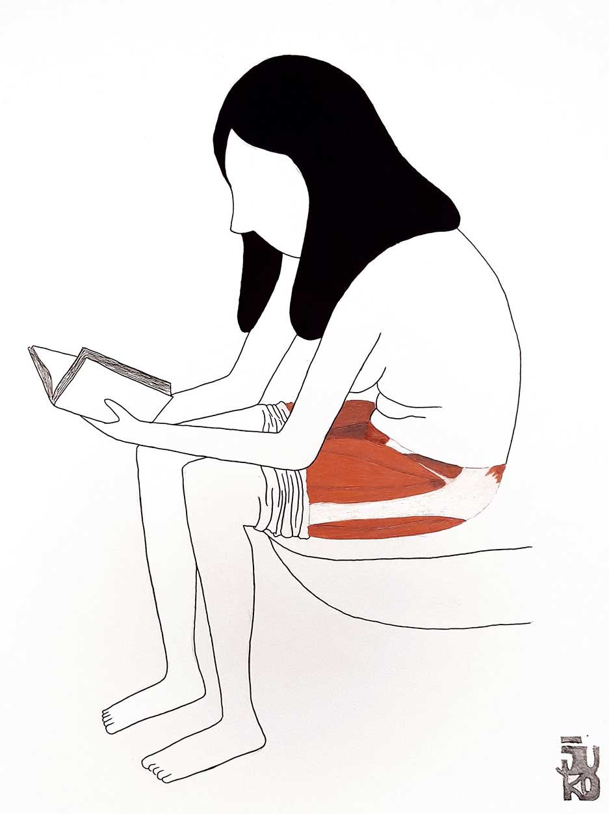
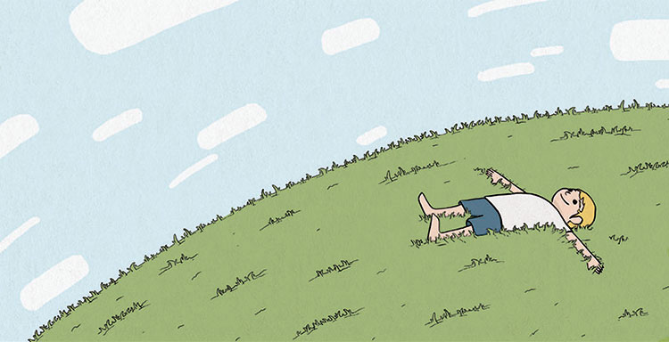
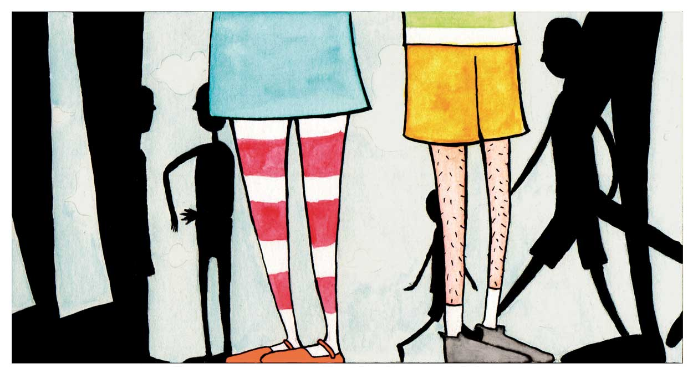
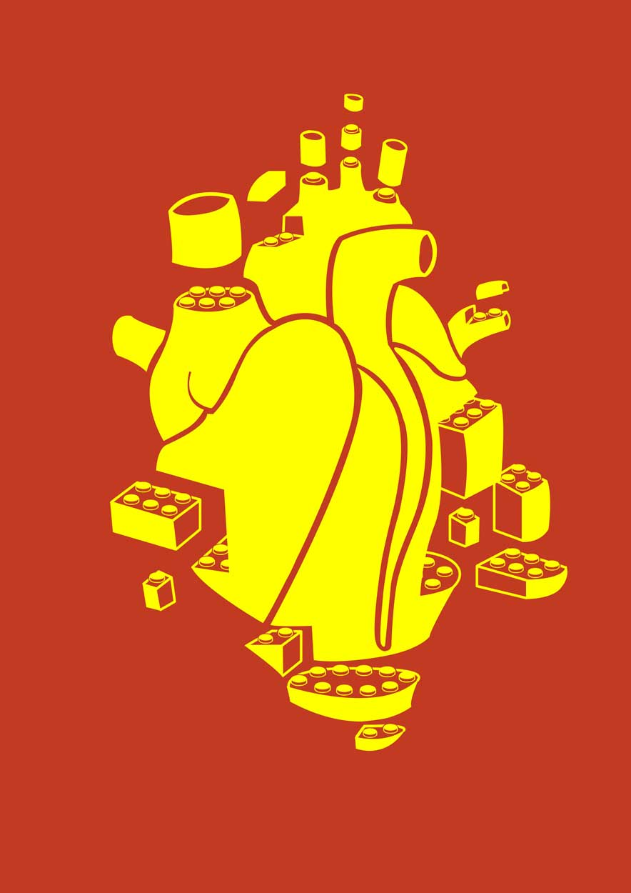
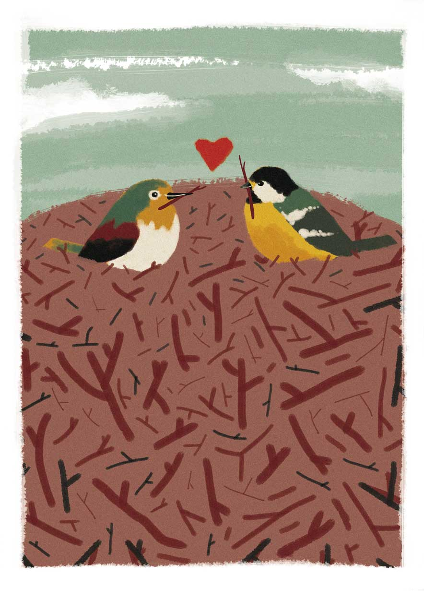
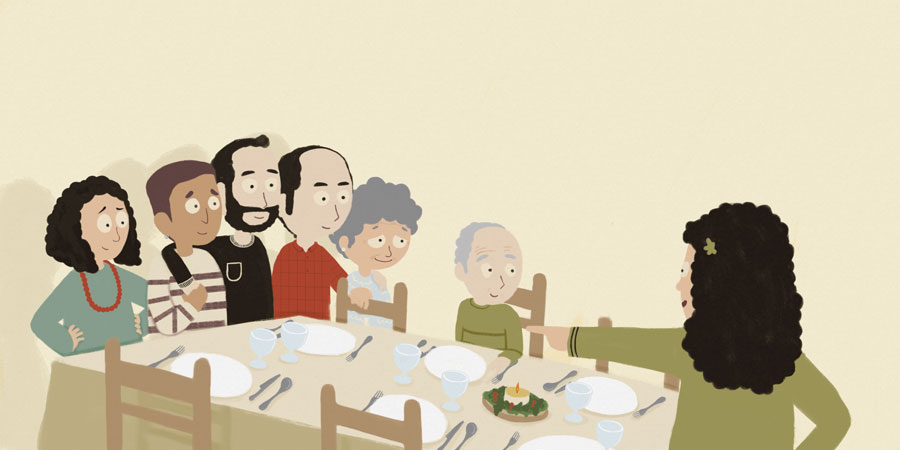

<!DOCTYPE html>
  <html>
  <head>
    <title>Aitor Larrea Ilustraciones - Proyectos</title>
    <meta charset="utf-8"/>
    <meta name="author" content ="Aitor Larrea"/>
    <meta name="copyright" content="Aitor Larrea"/>
    <meta name="description" content="Aitor Larrea, fundador de Juko Manduko e ilustrador de ideas, cuentos y proyectos."/>
    <meta name="keywords" content="ilustrador, ilustraciones, cuentos infantiles, ideas, proyectos"/>
    <meta http-equiv=”Content-Language” content=”es”/>
    <meta name="viewport" content="width=device-width, initial-scale=1"/>
    <link href="style.css" rel="stylesheet" type="text/css"/>
    <link rel="icon" href="img/favicon.png" type="image/png"/>
  </head>
  </html>

  <header>
    <h1>Aitor Larrea</h1>
    <div class="social">
      <a href="https://facebook.com/jukomanduko/" target="_blank"></a>
      <a href="https://instagram.com/jukomanduko" target="_blank"></a>
      <a href="https://www.pinterest.es/jukomanduko/" target="_blank"></a>
    </div>
  </header>
  <nav>
      <a href="index.html">Ilustraciones</a>
      <a href="proyectos.html">Proyectos</a>
      <a href="contacto.html">Contacto</a>
  </nav>
  <a href ="#" class = "toggle-nav"></a>


<div class="container">
  <div class="container-proyectos">
    
    <section>
      <div>
        <h2>Biluzik</h2><p>Primera exposición personal con el nombre de Biluzik (desnud@ en euskera) La piel como última capa antes de la desnudez del alma.</p>
        <a class="button" href="html/biluzik.html">Ver proyecto</a>
      </div>  
       
    </section>


    <section>
      
      <div>
        <h2>El Cargol i l’herbeta de poniol</h2>
        <p>Proyecto de personalización del cuento tradicional catalán. Cualquier niño se puede convertir en el protagonista de esta historia donde un pobre caracol necesita ayuda para curarse.</p>
        <a class="button" href="html/elcargol.html">Ver proyecto</a>
      </div> 
    </section>

    <section>
      <div>
        <h2>Esta historia</h2>
        <p>A Toni le gusta el azul, a Noelia el naranja, a Toni los peces, a Noelia los gatos... los protagonistas de esta historia tienen gustos diferentes, pero el destino les ha unido ¿Qué tendrá preparado para ellos? Proyecto por encargo.</p>
        <a class="button" href="html/estahistoria.html">Ver proyecto</a>
      </div>
        
    </section>

    <section>
      
      <div>
        <h2>Kor project</h2>
        <p>Diseños que surgen del corazón y el amor por la ilustración y que son llevados a la moda a través de la estampación.</p>
        <a class="button" href="html/korproject.html">Ver proyecto</a>
      </div>
      
    </section>

    <section>
      <div>
        <h2>Piu Piu</h2>
        <p>Piu Piu es un valiente pajarillo que ha decidido abandonar su nido ¿Qué aventuras le esperan más allá del bosque? Cuento escrito por Maria Dolores Ayala.</p>
        <a class="button" href="html/piupiu.html">Ver proyecto</a>
      </div>
      
    </section>

    <section>
      
      <div>
        <h2>Dinàmiques CONTAdes</h2>
        <p>¿Aquí quién manda? ¿Quién cuida a quién? y El Miedo de Daniela son los tres cuentos que forman Dinàmiques CONTAdes. Cuentos ilustrados para un público familiar y educativo. Dinàmiques CONTAdes es un proyecto de Laia Panyella y Laura Cortés, editado y publicado por POL·LEN edicions.
          </p>
        <a class="button" href="html/dinamiques-contades.html">Ver proyecto</a>
      </div>
    </section>

  </div>
</div>

   
	<script type="text/javascript" src="js/fadein.js"></script>
  <script type="text/javascript" src="js/menu.js"></script>